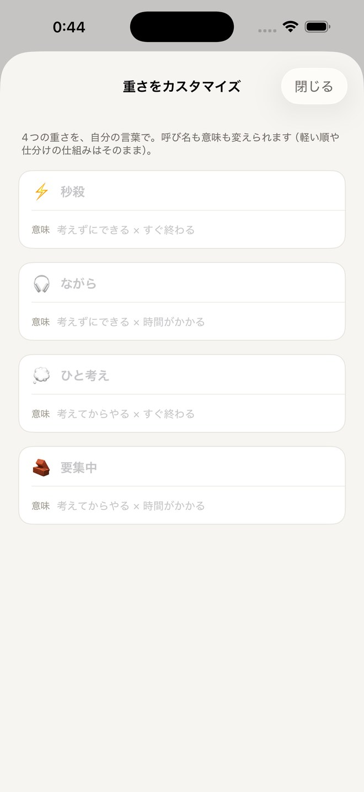

— 01 —
場面で出し分ける
移動中、寝る前。場面ごとに、いま手をつけられる軽さのタスクだけが、軽い順に並びます。
— pocket todo —
秒で放り込む、場面で出し分ける、
小タスク専用 ToDo。
— 01 —
移動中、寝る前。場面ごとに、いま手をつけられる軽さのタスクだけが、軽い順に並びます。

— 02 —
1行入力＋重さを1タップ。3秒で終わる、忘れる前に放り込む場所です。

— 03 —
気分に合わせて、アプリの色もホーム画面のアイコンも、ぜんぶ着替える。

— 04 —
7日より前に片付けたものも、ぜんぶ残っている。Pro なら全期間ふりかえれる。

— 05 —
4つの重さを、呼び名も意味も自分の言葉に。並びと仕分けの仕組みはそのまま、見える言葉だけが自分仕様になる。
— how it works —
＋ボタン、1行入力、重さを1タップ。3秒で終わる。
移動中。寝る前。場面ごとに、軽さで出し分く。
軽い順に並ぶ。完了はスワイプ一発で。
— plans —
無料
ずっと無料で。
Pro
無料機能ぜんぶに、
— questions —
すべて端末内に。サーバーには送られません。アカウント登録もログインも不要です。
無料版では「手動エクスポート」(CSV) で書き出して取り込み。Pro 版では iCloud 同期に順次対応します。
来ません。急かさない設計のため、通知機能を意図的に持っていません。
iPhone の「設定 → サブスクリプション」から。解約してもタスクデータは消えません。
失わない、ぜんぶ残る、きせかえる。
通知なし。リマインドで急かさない設計。
開発・お問い合わせ @bon_dev_